|
Open Archives Initiative Object Reuse and Exchange |
|
Open Archives Initiative Object Reuse and Exchange |
DO NOT USE THIS SPECIFICATION, see instead the CURRENT ORE SPECIFICATIONS.
This document was part of an alpha release and has been superseded.
Open Archives Initiative Object Reuse and Exchange (OAI-ORE) defines standards for the description and exchange of aggregations of Web resources. This document describes the abstract data model that is the foundation for these standards. This model is conformant with the Architecture of the World Wide Web [Web Architecture] and leverages Named Graphs [Named Graph] as a mechanism for encapsulating RDF descriptions [RDF Concepts] about aggregations. This specification is one of several documents comprising the OAI-ORE specification and user guide.
1. Introduction
1.1 Notational Conventions
1.2 Namespaces
2. Architectural Foundations
2.1 Web Architecture
2.1 Semantic Web and RDF
2.2 Named Graphs
3. Aggregation
4. Resource Map (ReM)
4.1 Identification of a
Resource Map (URI-R)
4.2 Identification
of an Aggregation (URI-A)
4.3 Semantics of URI-A
and URI-R
5. RDF Graph of a Resource Map
5.1 Relationship between a Resource
Map and an Aggregation
5.2 Metadata about the
Resource Map
5.3 Other identifiers of the Aggregation
5.4 Aggregated
resources and the Aggregation Graph
5.5 Internal Relationships
5.6 External Relationships of an Aggregation
5.7 Relationships to other
Aggregations
5.7.1 Aggregated
Resources and external Aggregations
5.7.2 Relationships among nested Aggregations
5.8 Structural Constraints on Resource Map
6. References
A. Acknowledgements
B. Change Log
The Architecture of the World Wide Web [Web Architecture] uses the term Resource to refer to any item of interest. A Resource can be anything at all, including an aggregation of other Resources. Examples of these aggregations are:
These aggregations exhibit the following characteristics:
A mechanism to associate identities with these aggregations and describe them in a machine-readable manner would make them visible to Web agents, both humans and machines. This could be useful for a number of applications and contexts. For example:
This specification describes the ORE Model that makes it possible to associate an identity with aggregations of Resources and provide descriptions of their structure and semantics. It introduces the Resource Map (ReM), which is a Resource that, in the manner of a Named Graph [Named Graph], encapsulates a set of RDF [RDF Concepts] triples. These triples instantiate an aggregation as a Resource with a URI, express metadata about the aggregation, enumerate the constituents of the aggregation and the relationships among those constituents, and describe the relationships of the aggregation to other Resources on the Web. This data model conforms to the concepts defined in the Architecture of the World Wide Web [Web Architecture].
The ORE Model can be implemented in a variety of serialization formats. The details of these formats are described in companion ORE documents. The nature of a particular serialization format and its respective expressiveness may affect the details of the mapping from the model to the implementation. This mapping is described in detail in each serialization specification.
This specification is one of several documents comprising the OAI-ORE specifications and user guides.
The keywords "MUST", "MUST NOT", "REQUIRED", "SHALL", "SHALL NOT", "SHOULD", "SHOULD NOT", "RECOMMENDED", "MAY", and "OPTIONAL" in this document are to be interpreted as described in RFC 2119 [IETF RFC 2119].
The use of fonts is as follows:
This specification uses the following namespaces and prefixes to indicate those namespaces:
| Prefix | Namespace URI | Description |
|---|---|---|
dc |
http://purl.org/dc/elements/1.1/ |
Dublin Core elements |
dcterms |
http://purl.org/dc/terms/ |
Dublin Core terms |
ore |
http://www.openarchives.org/ore/terms/ |
ORE vocabulary terms |
owl |
http://www.w3.org/2002/07/owl# |
OWL vocabulary terms |
rdf |
http://www.w3.org/1999/02/22-rdf-syntax-ns# |
RDF vocabulary terms |
A full description of Web Architecture concepts is contained in [Web Architecture]. For the remainder of this document, the use of the following terms from the Web Architecture SHOULD be interpreted as briefly summarized below:
The combination of these concepts forms what is commonly referred to as the Web Graph, with nodes that are URIs (which identify Resources), from which Representations are made available, and edges that are Links. An example of a Web graph is shown below. Note that this example shows that the Web graph is not necessarily connected - nodes O and P link to each other but not to other nodes in the graph.
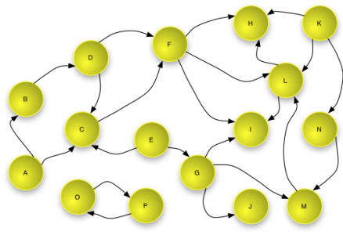
This specification also leverages Semantic Web concepts from RDF [RDF Concepts]. In RDF, Resources are described using sets of triples, each made up of three parts: a subject, a predicate and an object. The subject is a URI that identifies the described Resource; the object is either the URI of a second Resource or a literal that identifies values such as numbers and dates by means of a lexical representation; and the Predicate is a URI that identifies a type of relationship. Each triple states that a relationship of the type indicated by the Predicate (a URI) holds between the Resource identified by the subject (a URI) and the object (a URI or a Literal).
A set of RDF triples is referred to as an RDF Graph because it can be represented as a node and directed-arc diagram, in which each triple is represented as a node-arc-node link. The nodes of an RDF Graph are the subjects and objects of the constituent triples. In an RDF Graph each node is connected to at least one other node in the graph.
Note: this is a slight simplification of the RDF model because it ignores the concept of "blank nodes". The ORE model does not make use of "blank nodes" and they are not discussed further in this document
An example of an RDF Graph is shown in the figure below. As shown, the subject and Predicate of a triple are always URIs (the URI is indicated by the text in the yellow circle and shown with bracketed syntax <A> in the table) and the object may be a URI or a literal (shown as a blue rounded rectangle in the graph and in quotations in the table).
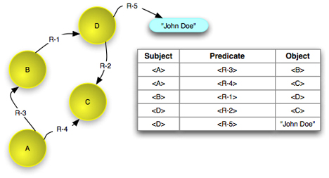
Another tool from the Semantic Web, the RDF Vocabulary Description Language [RDFS], provides the mechanisms to define vocabularies for defining the types of these relationships. In combination with the RDF-defined relationship rdf:type this vocabulary makes it possible to express types for Resources. The figure below shows an example of this. As shown, the objects of the triples with rdf:type Predicates are URIs, that denote classes or types.
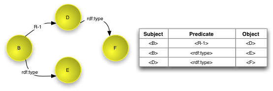
Finally, this specification builds on the notion of a Named Graph [Named Graph], which extends RDF to allow the association of a name - a URI - with a set of triples - a graph. A number of aspects of Named Graphs are shown in the figure below.

The introduction to this document introduced the concept of an aggregation in informal terms in order to outline the sort of problems the ORE Model seeks to address. The purpose of this section is to define more formally a class of Resources calledl Aggregations.
An Aggregation is a set of Resources which together form a "logical unit". Each of the individual Resources that compose an Aggregation is referred to as an Aggregated Resource. A Relationship of type ore:aggregates exists between an Aggregation and each Aggregated Resource.
In some cases, Relationships may be asserted to exist between the Aggregated Resources that constitute an Aggregation; in other cases, no Relationships are asserted to exist between the Aggregated Resources.
In some cases, Relationships may be asserted to exist between the Aggregated Resources and other Resources; in other cases, no such Relationships are asserted to exist.
Each Aggregation is described by a single Resource Map. The concept of the Resource Map is defined in the following section.
A Resource Map (ReM) is a Resource that specifies a URI for an Aggregation and describes its composition, properties, and relationships to other Resources. It does this via a set of triples, an RDF Graph, in the same manner as a Named Graph. This Graph has a well-defined structure.
A Relationship of type ore:describes exists between a Resource Map and an Aggregation. For each Aggregation, there exists exactly one Resource Map that describes the Aggregation; and for each Resource Map, there exists exactly one Aggregation that is described by that Resource Map. In other words, the ore:describes Relationship is an owl:InverseFunctional [OWL] Property.
Because a Resource Map is a Resource, it is uniquely identified by a URI. This specification uses URI-R to denote URIs that identify Resource Maps. A URI-R MUST be a Protocol-Based URI . A Resource Map may have multiple Representations, each of which is referred to as a Resource Map Document. These Representations MAY differ by character encoding, expressiveness, compression, and other characteristics, The syntax of these Representations is particular to each serialization format, each of which is defined in companion ORE specifications. Each serialization format MUST have well-defined rules for deterministically mapping to triples that conform to the well-defined structure of a Resource Map. Some serialization formats MAY have reduced expressiveness and therefore MAY not include all features of the data model described here.
As noted above, this specification uses URI-A to denote URIs that identify Aggregations. A URI-A MUST be unique relative to the one Resource Map that describes the respective Aggregation. This one-to-one relationship between a URI-R and its corresponding URI-A is syntactically enforced. A URI-A MUST be constructed by appending a fragment identifier to the URI-R, which MUST be the string #aggregation. For example, the URI-R http://sample.org/ReM-1 would be the Resource Map that describes the Aggregation with URI-A http://sample.org/ReM-1#aggregation.
Note that as defined in [URI], resolution of a fragment identifier is left to the client, after resolution of the URI - stripped of the fragment - by the server. Therefore, any request to a server to dereference URI-A results in a dereference of URI-R.
Note that a URI-A denotes an Aggregation, and the corresponding URI-R denotes a Resource Map that describes that Aggregation. Clients SHOULD recognize this distinction when linking to or expressing relationships with a URI-R or URI-A. Notably, a relationship, such as a citation link, to the "intellectual object" SHOULD use URI-A rather than URI-R, since the latter denotes a citation of the Resource Map, which is usually not the intended target of a citation.
A Resource Map is a specialization of a Named Graph. Like any Named Graph it is a Resource - a first-class object in the Web Architecture - that expresses an RDF Graph via the triples it encodes. In a general Named Graph, the structure and composition of the RDF Graph expressed by the triples are not defined, and there are no restrictions on the Resources identified by nodes in the graph.
The RDF Graph expressed by a Resource Map must conform to a number of restrictions. The graph MUST be connected, with its structure defined as follows (and expanded upon in the numbered section accompanying each bullet):
A complete example of the RDF Graph expressed by a Resource Map is shown in the following figure. The remainder of this section explains the components of this graph in a step-by-step progression. The constraints on the graph are summarized a table later in this document.
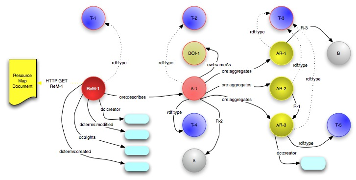
A Resource Map MUST establish a relationship to its respective Aggregation via a triple with an ore:describes Predicate, where the subject is URI-R and the object is the corresponding URI-A. The ore:describes relationship defines that the Resource denoted by the subject is a resource of type ore:ResourceMap and the Resource denoted by the object is a resource of type ore:Aggregation. Therefore, the explicit inclusion in the Resource Map of triples asserting these types is OPTIONAL.
The ore:isDescribedBy relationship is the inverse of ore:describes. Semantically, ore:isDescribedBy has an owl:inverseOf [OWL] relationship to ore:describes. This means that every triple of the form <ResourceMap> <ore:describes> <Aggregation> implies the inverse triple <Aggregation> <ore:isDescribedBy> <ResourceMap>, and vice versa. A Resource Map SHOULD NOT include these implied ore:isDescribedBy triples.
The figure below illustrates the triples asserting the relationship between a Resource Map and an Aggregation and the resulting RDF graph. The implied types for each Resource are also shown. The table to the right of the triples shows the URIs used to identify the Resources and relationships.
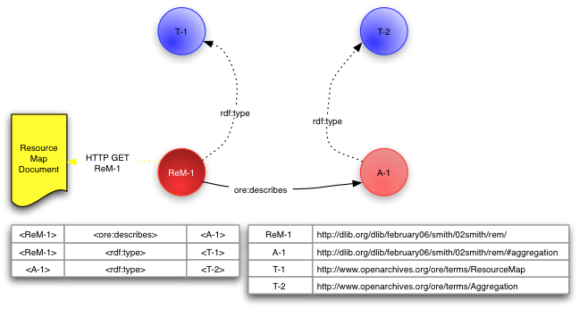
A Resource Map MUST express minimal metadata properties about the Resource Map. Those metadata properties are:
A Resource Map MAY include additional metadata properties about the Resource Map. Examples of additional metadata properties are:
The figure below shows an RDF Graph expressed by a Resource Map that includes metadata properties about Resource Map. Note that aspects of the graph already described are grayed-out (this convention will be used for the remainder of this section). Note also that in this example, the objects of all the metadata relationships are literals. Alternatively, the objects may be URIs denoting other Resources.
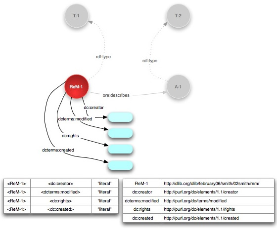
In some cases there may exist other identifiers for the Resource identified by URI-A. These identifiers may be protocol-based URIs such as the HTTP URI of a splash page for a document in an institutional repository, a non-protocol-based URI such as a DOI [DOI], or some other form of identifier. The Resource Map MAY express the existance of these other identifiers via triples with the owl:sameAs [OWL] Predicate, where the subject is the URI of the Aggregation and the object is the other identifier. Note that the semantics of owl:sameAs state that the two URIs serving as subject and object of the respective triple are interchangable and any node in a triple that matches one of the "sameAs" URIs can be replaced with a node that is the corresponding URI.
The addition of this information about other identifiers to the RDF Graph is shown below.
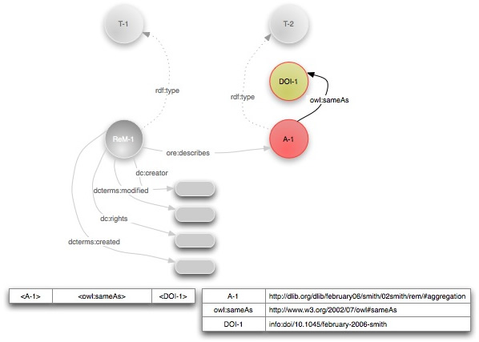
An Aggregation consists of one or more Aggregated Resources, which are logically the constituents of the Aggregation. To enumerate these, the Resource Map MUST express one or more triples where the subject is the URI of the respective Aggregation, the Predicate is ore:aggregates, and the object is URI of a Resource that MUST NOT be the Resource Map or the Aggregation itself. Note that a Resource MAY be expressed as an Aggregated Resource by multiple Resource Maps. The ore:aggregates relationship defines that the Resource denoted by the subject is a Resource of type ore:aggregation and the Resource denoted by the object is a Resource of type ore:AggregatedResource. Therefore, the explicit inclusion in the Resource Map of triples asserting these types is OPTIONAL.
The figure below shows the RDF Graph that results from the triples expressed by the Resource Map that have the Predicate ore:aggregates in color. This subgraph of the RDF Graph is known as the Aggregation Graph. The implied types for each Aggregated Resource are also shown. The remaining nodes are in grey.

For a Resource Map http://example.org/ReM-1, the Aggregation Graph is defined by the following SPARQL query [SPARQL]
PREFIX ore: <http://www.openarchives.org/ore/terms/>
CONSTRUCT { ?a ore:aggregates ?ar1 . }
WHERE { <http://example.org/ReM-1> ore:describes ?a .
?a ore:aggregates ?ar1 . }
As described in the previous sections, the minimal RDF Graph expressed by a Resource Map expressees properties of the Resource Map itself and expresses the relationship of the Resource Map to the corresponding Aggregation. In addition, via the ore:aggregates Predicate, it expresses the Aggregation Graph that defines the Resources that are constituents of the Aggregation, the Aggregated Resources.
As defined thus far, there are no relationships among the Aggregated Resources, shown above as AR-1, AR-2, and AR-3, except for their status as constituents of the Aggregation. A Resource Map MAY express relationships among the Resources denoted by the nodes in the Aggregation Graph, in addition to the minimal ore:aggregates relationships. relationships where both the subject and object are nodes in the Aggregation Graph are Internal Relationships. These relationships may be useful for describing the structure of the aggregation with semantics such as containment, format variation, and the like. The Predicates of triples asserting Internal Relationships MAY be defined by any vocabulary.
The figure below shows the addition of a triple asserting an Internal Relationship to the RDF Graph defined by the Resource Map.
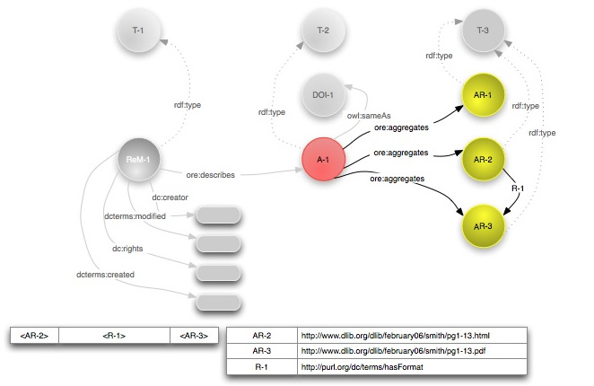
For a Resource Map ReM-1, the RDF Graph containing the Triples which assert Internal Relationships is defined by the following SPARQL query [SPARQL]:
PREFIX ore: <http://www.openarchives.org/ore/terms/>
CONSTRUCT { ?ar1 ?p ?ar2 . }
WHERE { <http://example.org/ReM-1> ore:describes ?a .
?a ore:aggregates ?ar1 .
?a ore:aggregates ?ar2 .
?ar1 ?p ?ar2 . }
The RDF Graph expressed by a Resource Map MAY contain triples that reference Resources that are not denoted by nodes in the Aggregation Graph. In addition it MAY contain triples where the subject is a node in the Aggregation Graph and the object is a literal. These are known as External Relationships. Note that a Resource Map MUST NOT contain triples where the subject is not a node in the Aggregation Graph and the object is a literal. These are useful for expressing two types of information:
The figure below shows the addition of triples asserting External Relationships expressing type semantics and other relationships to the Aggregation Graph.
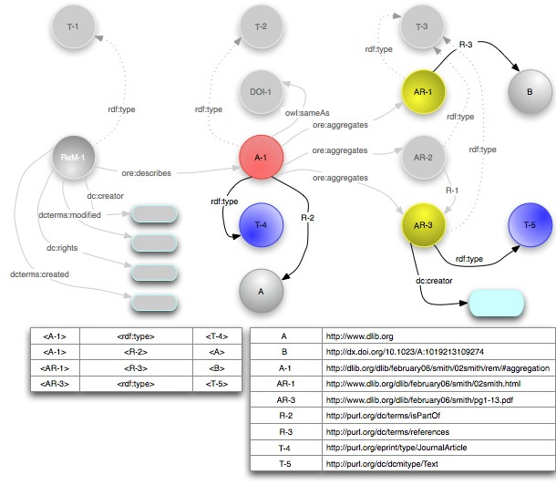
For a Resource Map ReM-1, the RDF Graph containing the Triples which assert External Relationships is defined by the following SPARQL query [SPARQL]:
Every triple of the form <Aggregation> <ore:aggregates> <Resource> implies the inverse triple <Resource> <ore:isAggregatedBy> <Aggregation>. Formally, ore:isAggregatedBy has an owl:inverseOf [OWL] relationship to ore:aggregates.
Triples of the form <Resource> <ore:isAggregatedBy> <Aggregation> MAY be included in a Resource Map to assert that an Aggregated Resource is also an Aggregated Resource of another Aggregation. The assertion in a Resource Map of ore:isAggregatedBy relationships is OPTIONAL and dependent on use case . When appropriate for a use case (e.g. providing a scholarly citation, establishing lineage, or facilitating discovery), it is RECOMMENDED that a Resource Map include triples with ore:isAggregatedBy Predicates only when the Aggregation that is the object of the triple is described by another Resource Map, thereby establishing them as external relationships of the Aggregation. Inclusion in a Resource Map of triples with ore:isAggregatedBy as internal relationships (the subject and object are members of the respective Aggregation Graph) is OPTIONAL, since these are implied by ore:aggregates relationships that are already asserted in that Resource Map.
Because the assertion of ore:isAggregatedBy is OPTIONAL, a client MUST NOT assume that a triple with an ore:aggregates Predicate has a corresponding inverse triple with an ore:isAggregatedBy Predicate in the same or another Resource Map .
A use case demonstrating the use of ore:isAggregatedBy to make assertions about the relationship between Aggregated Resources and other Aggregations is illustrated in the figure below. The Aggregation (A-3), described by the Resource Map ReM-3, is a journal, where the Aggregated Resources, AR-3 and AR-4, are selected scholarly papers. As shown, AR-3 is included in two other Aggregations, A-1 and A-2, which are themselves journals. The authority managing AR-3 would like to make the inclusion in the other journals visible to clients accessing the journal. Therefore, the Resource Map describing A-3 includes triples with the Predicate ore:isAggregatedBy, asserting such relationships between AR-3 and A-1 and between AR-3 and A-2.
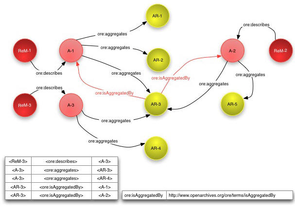
Another use case of the ore:isAggregatedBy relationship is nested Aggregations, where the Aggregated Resources of one Aggregation are themselves Aggregations described by other Resources Maps. An example of a nested Aggregation is a journal consisting of multiple issues, each of which is an Aggregation of multiple articles, each of which may be an Aggregation in its own right. The figure below illustrates nested Aggregations, omitting some details of previous figures (e.g. metadata, typing). Aggregation A-1 described by ReM-1 has constituents AR-1, AR-2 and AR-3, which are are themselves Aggregations. Each of these "aggregated Aggregations" is described by a corresponding Resource Map (ReM-2, ReM-3, and ReM-4) which describes the Aggregated Resources and other aspects of these Aggregations.
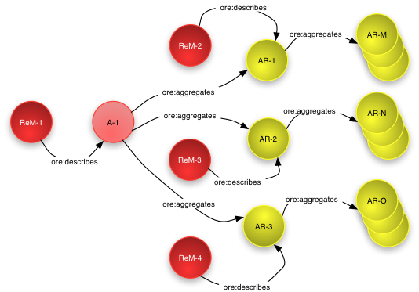
The authority authoring and managing a nested Aggregation MAY choose to inform consuming clients of the "part/whole" nature of such nested Aggregations by including triples with the ore:isAggregatedBy Predicate in the Resource Maps that describe the nested Aggregations. In this manner a client accessing one of the issues has direct access back to the aggregating journal. The figure below illustrates this use of the ore:isAggregated relationship for nested Aggregations. This is the same "journal/issue" example shown above, but simplified to show only one "issue" AR-1, aggregated in the "journal" A-1. As shown, ReM-2 expresses a ore:isAggregated relationship for its respective nested Aggregation, AR-1 thereby providing information about the "containment" of AR-1, the "issue", in A-1, the "journal".
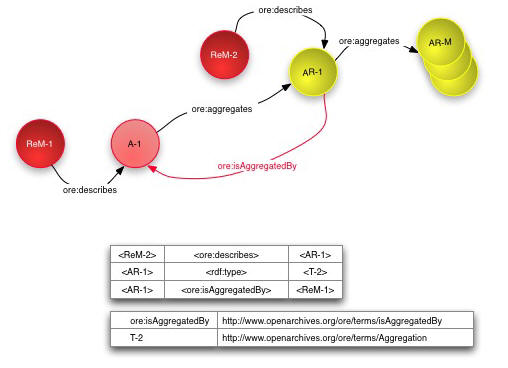
The following table summarises the constraints on the structure of an RDF Graph that serves as a Resource Map by specifying the minimum and maximum expected occurrences of Triples of varying forms.
The convention used in the table is that
ReM-1 is the URI of the Resource MapA-1 is the URI of the Aggregation described by the Resource MapAR-i is the URI of an Aggregated Resource which is aggregated into that AggregationURI-S is the URI of a ResourceURI-P is the URI of a type of RelationshipURI-O is the URI of a ResourceA-k is the URI of an Aggregation other than the Aggregation described by the Resource Map| Subject | Predicate | Object | Occurs (Min, Max) |
Note |
|---|---|---|---|---|
| ReM-1 | ore:describes |
A-1 | (1, 1) |
Relationship between Resource Map and Aggregation (5.1) |
| ReM-1 | rdf:type |
ore:ResourceMap |
(0, 1) |
Typing of Resource Map (5.1) |
| ReM-1 | dc:creator |
literal or URI-O | (1, 1) |
Metadata about Resource Map (Required) (5.2) |
| ReM-1 | dcterms:modified |
literal | (1, 1) |
Metadata about Resource Map (Required) (5.2) |
| ReM-1 | URI-P | literal or URI-O | (0, *) |
Metadata about Resource Map (Optional) (5.2) |
| URI-S | URI-P | ReM-1 | (0, *) |
Metadata about Resource Map (Optional) (5.2) |
| A-1 | ore:aggregates |
AR-i | (1, *) |
Relationship between Aggregation and Aggregated Resource (5.3) |
| AR-i | ore:isAggregatedBy |
A-1 | (0, *) |
Relationship between Aggregated Resource and Aggregation (5.3) |
| A-1 | rdf:type |
ore:Aggregation |
(0, 1) |
Typing of Aggregation (5.1) |
| A-1 | owl:sameAs |
URI-O |
(0, *) |
Other identifiers of the Aggregation (5.3) |
| A-1 | URI-P | literal or URI-O | (0, *) |
Other properties of the Aggregation (5.3)/External Relationships of an Aggregation (5.6) |
| URI-S | URI-P | A-1 | (0, *) |
Other properties of the Aggregation (5.3)/External Relationships of an Aggregation (5.6) |
| AR-i | rdf:type |
ore:AggregatedResource |
(0, 1) |
Typing of Aggregated Resource (5.1) |
| AR-i | ore:isAggregatedBy |
A-k | (0, *) |
Relationship between Aggregated Resource and Other Aggregation (5.7) |
| AR-i | URI-P | literal or URI-O | (0, *) |
External Relationships of an Aggregated Resource (5.6) |
| URI-S | URI-P | AR-i | (0, *) |
External Relationships of an Aggregated Resource (5.6) |
This document is the work of the Open Archives Initiative. Funding for Open Archives Initiative Object Reuse and Exchange is provided by the Andrew W. Mellon Foundation, Microsoft, and the National Science Foundation. Additional support is provided by the Coalition for Networked Information.
This document is based on meetings of the OAI-ORE Technical Committee (ORE-TC), with participation from the OAI-ORE Liaison Group (ORE-LG). Members of the ORE-TC are: Chris Bizer (Freie Universität Berlin), Les Carr (University of Southampton), Tim DiLauro (Johns Hopkins University), Leigh Dodds (Ingenta), David Fulker (UCAR), Tony Hammond (Nature Publishing Group), Pete Johnston (Eduserv Foundation), Richard Jones (Imperial College), Peter Murray (OhioLINK), Michael Nelson (Old Dominion University), Ray Plante (NCSA and National Virtual Observatory), Rob Sanderson (University of Liverpool), Simeon Warner (Cornell University), and Jeff Young (OCLC). Members of ORE-LG are: Leonardo Candela (DRIVER), Tim Cole (DLF Aquifer and UIUC Library), Julie Allinson (JISC), Jane Hunter (DEST), Savas Parastatidis (Microsoft), Sandy Payette (Fedora Commons), Thomas Place (DARE and University of Tilburg), Andy Powell (DCMI), and Robert Tansley (Google, Inc. and DSpace)
We also acknowledge comments from the OAI-ORE Advisory Committee (ORE-AC).

This work is licensed under a Creative Commons Attribution-Noncommercial-Share Alike 3.0 Unported License.
Use of this page is tracked to collect anonymous traffic data. See OAI privacy policy.